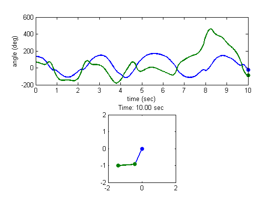
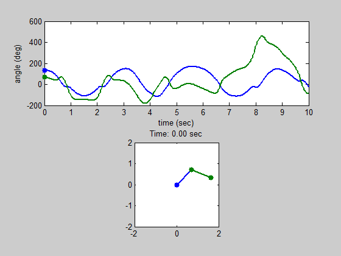

Animation
Table of Contents, Get code for this tutorial
Note: You can execute the code from this tutorial by highlighting them, right-clicking, and selecting "Evaluate Selection" (or hit F9).
In this tutorial, you will learn how to do animations in MATLAB. You will learn about creating animations of MATLAB graphs as well as making AVI movies and animated GIFs.
Contents
Animating using Loops
You can easily create animations by using for loops (or while loops). At each loop iteration you can update the graph with the appropriate data for that time step.
m = 1; % mass L = 1; % link length theta1 = 3*pi/4; % initial angle for theta 1 (in rad) theta2 = 3*pi/8; % initial angle for theta 2 (in rad) t = linspace(0, 10, 300); % simulate for 10 seconds with 300 points % Solving ODE of a double pendulum [T,Y] = ode45(@(t, x) double_pendulum(t, x, m, L), ... t, [theta1, theta2, 0, 0]); % Calculating joint coordinates for animation purposes x = [ L*sin(Y(:,1)), L*sin(Y(:,1))+L*sin(Y(:,2))]; y = [-L*cos(Y(:,1)), -L*cos(Y(:,1))-L*cos(Y(:,2))]; % Convert radians to degrees ang = Y(:,1:2)*180/pi; figure; subplot(2,1,1); xlabel('time (sec)'); ylabel('angle (\circ)'); tic; % start timing for id = 1:length(T) % The top plot shows a time series of link angles subplot(2,1,1); plot(T,ang, 'LineWidth', 2); line(T(id), ang(id,1), 'Marker', '.', 'MarkerSize', 20, 'Color', 'b'); line(T(id), ang(id,2), 'Marker', '.', 'MarkerSize', 20, 'Color', [0 .5 0]); xlabel('time (sec)'); ylabel('angle (deg)'); % The bottom plot shows the animation of the double pendulum subplot(2,1,2); plot([0, x(id,1);x(id,1), x(id,2)], [0, y(id,1);y(id,1), y(id,2)], ... '.-', 'MarkerSize', 20, 'LineWidth', 2); axis equal; axis([-2*L 2*L -2*L 2*L]); title(sprintf('Time: %0.2f sec', T(id))); drawnow; end fprintf('Animation (Regular): %0.2f sec\n', toc);
Animation (Regular): 9.02 sec
Animating using Loops (Smart updating)
While it's perfectly fine to do animations like above, there's a better way of doing animation that is more efficient in terms of memory and speed. Some commands do a lot more than what the name suggests. For example, plot may clear previous axes, remove existing graphics objects, reset some properties, and generate new graphics objects. Doing all of these actions every time through the loop may start to slow down the process especially if you are animating large amounts of data.
A better approach is to do the main plotting once, and then simply change the underlying data through the loop. To do that, you store the handles from the initial plotting routines, and use them to modify the XData and YData.
figure; subplot(2,1,1); plot(T, ang, 'LineWidth', 2); hh1(1) = line(T(1), ang(1,1), 'Marker', '.', 'MarkerSize', 20, 'Color', 'b'); hh1(2) = line(T(1), ang(1,2), 'Marker', '.', 'MarkerSize', 20, 'Color', [0 .5 0]); xlabel('time (sec)'); ylabel('angle (deg)'); subplot(2,1,2); hh2 = plot([0, x(1,1);x(1,1), x(1,2)], [0, y(1,1);y(1,1), y(1,2)], ... '.-', 'MarkerSize', 20, 'LineWidth', 2); axis equal axis([-2*L 2*L -2*L 2*L]); ht = title(sprintf('Time: %0.2f sec', T(1))); tic; % start timing for id = 1:length(T) % Update XData and YData set(hh1(1), 'XData', T(id) , 'YData', ang(id, 1)); set(hh1(2), 'XData', T(id) , 'YData', ang(id, 2)); set(hh2(1), 'XData', [0, x(id, 1)] , 'YData', [0, y(id, 1)]); set(hh2(2), 'XData', x(id, :) , 'YData', y(id, :)); set(ht, 'String', sprintf('Time: %0.2f sec', T(id))); drawnow; end fprintf('Animation (Smart update): %0.2f sec\n', toc);
Animation (Smart update): 3.22 sec
If it's too fast, you can always put a pause command instead of drawnow.
Animation using Timer Objects
Instead of using loops, you can also create animations using MATLAB's timer objects. Timer objects are a generic way of performing scheduled actions. One of the advantages of using a timer object is that it allows you to do other operations in MATLAB in between timer executions. The documentation does a good job explaining how to use timer objects. You basically put the graphics update code inside the timer function that gets executed every time interval.
Creating Movies (AVI)
Once you have an animation working in MATLAB, you can easily create a movie file (AVI) using avifile or movie2avi.
% Preallocate movie structure. mov(1:length(T)) = struct('cdata', [], 'colormap', []); % Animate and add animation frame to the movie structure for id = 1:length(T) % Update XData and YData set(hh1(1), 'XData', T(id) , 'YData', ang(id, 1)); set(hh1(2), 'XData', T(id) , 'YData', ang(id, 2)); set(hh2(1), 'XData', [0, x(id, 1)] , 'YData', [0, y(id, 1)]); set(hh2(2), 'XData', x(id, :) , 'YData', y(id, :)); set(ht, 'String', sprintf('Time: %0.2f sec', T(id))); % Get frame as an image mov(id) = getframe(gcf); end % Create AVI file movie2avi(mov, 'animation.avi'); clear mov
Creating Animated GIFs
Another way to save the animation is to create an animated GIF. You can create one using the imwrite function.
% Get figure size pos = get(gcf, 'Position'); width = pos(3); height = pos(4); % Preallocate mov = zeros(height, width, 1, length(T), 'uint8'); % Animate and add animation frame to the movie structure for id = 1:length(T) % Update XData and YData set(hh1(1), 'XData', T(id) , 'YData', ang(id, 1)); set(hh1(2), 'XData', T(id) , 'YData', ang(id, 2)); set(hh2(1), 'XData', [0, x(id, 1)] , 'YData', [0, y(id, 1)]); set(hh2(2), 'XData', x(id, :) , 'YData', y(id, :)); set(ht, 'String', sprintf('Time: %0.2f sec', T(id))); % Get frame as an image f = getframe(gcf); % Create a colormap for the first frame. For the rest of the frames, use % the same colormap if id == 1 [mov(:,:,1,id), map] = rgb2ind(f.cdata, 256, 'nodither'); else mov(:,:,1,id) = rgb2ind(f.cdata, map, 'nodither'); end end % Create animated GIF imwrite(mov, map, 'animation.gif', 'DelayTime', 0, 'LoopCount', inf)
